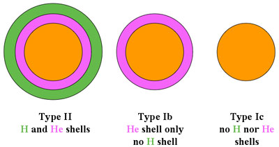

Before 1987, Type Ic supernovae (SNIc) were not recognised as a separate class of object. Based on their light curve shape and spectral similarities at maximum light, they, along with Type Ia supernovae (SNIa) and Type Ib supernovae (SNIb) were all grouped together as Type I supernovae.
In the mid-1980s as data quality improved, it was realised that Type I supernovae contained at least 2 (and perhaps 3) distinct types of object. SNIa resulted from the explosion of a white dwarf, while SNIb and SNIc were the result of the core-collapse of a massive star and more akin to Type II supernovae (SNII).
Today there remains some controversy about whether SNIb and SNIc are indeed different objects, with some astronomers labelling supernovae of both types, SNIb/c. The uncertainty arises since both SNIb and SNIc have similar light curves, spectral evolution and radio properites. In fact, the only real observable difference between them is the apparent lack of helium in the spectra of SNIc.

The progenitors of SNIc are, not surprisingly, thought to be very similar to those of other core-collapse supernovae. However, while the progenitors of SNII retain both their hydrogen and helium envelopes prior to explosion, and SNIb retain their helium envelope, SNIc appear to have lost both the hydrogen and helium envelopes, resulting in an almost featureless spectrum at early times.
The light curves of SNIc are very similar to those of SNIb and SNIa and, like SNIb, tend to be 1.0 – 1.5 magnitudes fainter than a typical SNIa. This is, however, equivalent in brightness to some sub-luminous SNIa and as a general rule, it is not possible to distinguish between SNIa, SNIb and SNIc on light curve shape alone. For this reason astronomers must always obtain a spectrum (preferably at maximum light) to correctly classify new supernovae.